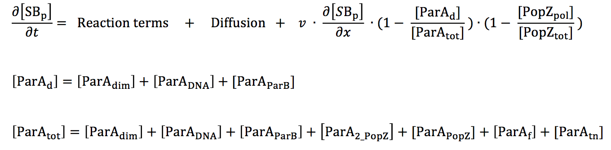

Spatiotemporal Model of Chromosome Segregation in Caulobacter crescentus
In recent years, ParABS-mediated chromosomal segregation has been frequently studied in the bacterium Caulobacter crescentus [1-6]. The parS locus is located 8 kb away from the origin of replication [7], which in turn is oriented towards the old (stalked) pole of the Caulobacter cell. The ParB protein binds specifically to the parS sequence forming a centromere-like complex. Chromosome replication results in two copies of the parS/ParB complex. While the old copy is retained at the old pole, the new centromeric complex or 'chromosome front' is translocated to the opposite pole in a matter of minutes [1,4,6]. Fluorescence microscopy experiments demonstrate that the parS/ParB complex follows a retracting cloud of ParA towards the new pole [1,2], suggesting that ParA participates in the segregation of the replicated bacterial chromosome (Figure 5.1).

Figure 5.1: Schematic illustration of the consensus model of chromosome segregation in Caulobacter crescentus. In the swarmer cell, a ParA concentration gradient (pink) extends from a maximum at the new pole to a minimum at the old pole. The parS/ParB chromosome front (green circles) is tethered to the single focus of PopZ (red). Once DNA replication is initiated in the stalked cell, a second copy of the parS/ParB chromosome front translocates behind the receding ParA structure. Concurrent with the completion of segregation in the early predivisional cell, a new focus of PopZ is formed at the new pole to tether the newly replicated chromosome front. TipN (blue circle) is localized at the new pole in the early stages of the cell cycle before being repositioned at mid-cell in the late predivisional stage.
Method
Spatial discretization. The proteins under investigation in this work are distributed heterogeneously along the long axis of a Caulobacter cell. Hence, it is sufficient to consider biochemical reactions and diffusion occurring in one spatial dimension, and to write the governing partial differential equation (PDE) for a generic chemical species C as:

parS/ParB segregation. All variables in our differential equation model have units of concentration. There can be only one or two parS sequences at any given stage of the cell cycle; hence, defining parS in terms of a real number variable S(x,t) is not accessible to our model. Instead, we treat the chromosome sequence parS and the protein ParB as a single polymeric entity. Furthermore, for microscopy experiments reported in literature, ParB is tagged and used as a proxy for parS movement in the cell. Hence, representing the two as single entity reflects the protocol of the experimental observations we are trying to replicate in simulation.

ParA biochemical pathway. Since we desire to investigate parS segregation in both ParA wild-type and mutant backgrounds, a description of ParA's interactions with ParB, DNA and other ParA molecules is important. Figure 5.2 shows the biochemical reactions that form the bases for the equations in our model. The numbers of ParA molecules present in the cell are not sufficient to make up a polymer filament that is long enough to span the long axis of the Caulobacter cell, making it unlikely for the chromosome to be segregated by a ParA filament [4]. Hence, we do not include the ParA polymer species in or model. We desired to simulate three important ParA mutants in our model, namely (i) ParAG16V, which is a dimerization-negative mutant, (ii) ParAR195E, which is deficient in DNA binding, and (iii) ParAD44A, in which the ATPase activity is blocked. For each of these mutants, the rate constant for the corresponding reaction is set to zero.

Figure 5.2: Proposed ParA biochemical cycle ParA monomers (pink) can bind TipN (blue), PopZ (red), or form dimers. ParA dimers bind non- specifically to DNA. The parS/ParB chromosome front (green) has high affinity for DNA-bound ParA dimers. ParB up-regulates the ATPase activity of ParA, resulting in the release of ParA in the form of free monomers.
FtsZ, TipN and MipZ localization dynamics. In our model, MipZ is present in a freely diffusing monomeric form and a parS-bound form that cannot diffuse. FtsZ is represented in both monomeric and polymeric forms. Polymer formation occurs by de novo and autocatalytic growth. The rate of FtsZ depolymerization is a function of total MipZ. The localization of TipN depends indirectly on FtsZ [8]. For simplicity however, we assume TipN directly binds to and co- localizes with FtsZ.
PopZ. In vivo, the PopZ protein assembles into polymeric aggregates that localize at the old pole in swarmer cells and later assumes bipolar distribution [9,10]. New pole localization of PopZ requires DNA replication [11] and chromosome segregation [12]. In earlier work, we formulated a model to show that PopZ localization pattern can be explained based on a Turing mechanism. Further, we proposed that slow diffusion of popZ mRNA makes it necessary for the popZ gene to be present close to both poles for bipolar PopZ localization. The current model does not include popZ genes or mRNA. In this preliminary model, we set the rate of PopZ monomer production to be dependent on the concentration of the parS/ParB focus. As a result, the emergence of a PopZ focus at the new pole coincides with the completion of chromosome segregation.
Reference
- Schofield WB, Lim HC, Jacobs-Wagner C (2010) Cell cycle coordination and regulation of bacterial chromosome segregation dynamics by polarly localized proteins. Eur Mol Biol Organ J 29: 3068-3081.
- Ptacin JL, Lee SF, Garner EC, Toro E, Eckart M, et al. (2010) A spindle-like apparatus guides bacterial chromosome segregation. Nat Cell Biol 12: 791-798.
- Toro E, Hong S-H, McAdams HH, Shapiro L (2008) Caulobacter requires a dedicated mechanism to initiate chromosome segregation. Proc Natl Acad Sci U S A 105: 15435-15440.
- Lim HC, Surovtsev VI, Beltran BG, HUang F, Bewesdorf Jorg, et al. (2014) Evidence for a DNA-relay mechanism in ParABS-mediated chromosome segregation. Elife 3.
- Ptacin JL, Gahlmann A, Bowman GR, Perez AM, von Diezmann ARS, et al. (2014) Bacterial scaffold directs pole-specific centromere segregation. Proc Natl Acad Sci U S A.
- Shebelut CW, Guberman JM, Van Teeffelen S, Yakhnina AA, Gitai Z (2010) Caulobacter chromosome segregation is an ordered multistep process. Proc Natl Acad Sci U S A 107: 14194-14198.
- Hong S-H, McAdams HH (2011) Compaction and transport properties of newly replicated Caulobacter crescentus DNA. Mol Microbiol 82: 1349-1358.
- Yeh Y-C, Comolli LR, Downing KH, Shapiro L, McAdams HH (2010) The Caulobacter Tol- Pal complex is essential for outer membrane integrity and the positioning of a polar localization factor. J Bacteriol 192: 4847-4858.
- Ebersbach G, Briegel A, Jensen GJ, Jacobs-Wagner C (2008) A self-associating protein critical for chromosome attachment, division, and polar organization in Caulobacter. Cell 134: 956-968.
- Bowman GR, Comolli LR, Zhu J, Eckart M, Koenig M, et al. (2008) A polymeric protein anchors the chromosomal origin/ParB complex at a bacterial cell pole. Cell 134: 945-955.
- Bowman GR, Comolli LR, Gaietta GM, Fero M, Hong S-H, et al. (2010) Caulobacter PopZ forms a polar subdomain dictating sequential changes in pole composition and function. Mol Microbiol 76: 173-189.
- Laloux G, Jacobs-Wagner C (2013) Spatiotemporal control of PopZ localization through cell cycle-coupled multimerization. J Cell Biol 201: 827-841.
 webmaster
webmaster